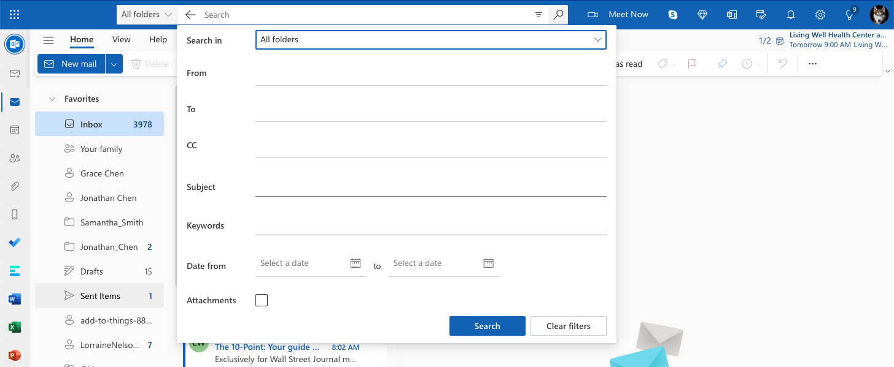
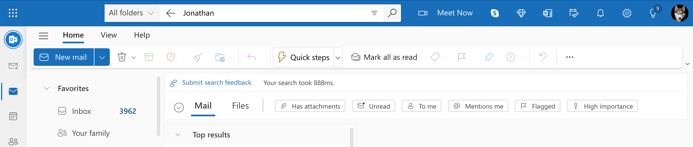
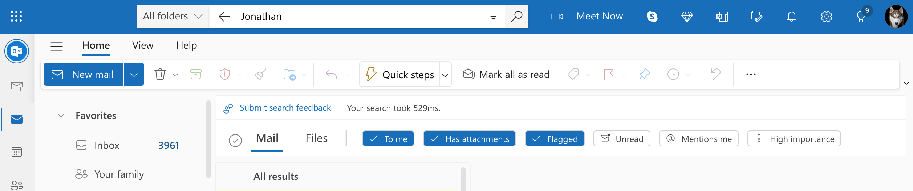
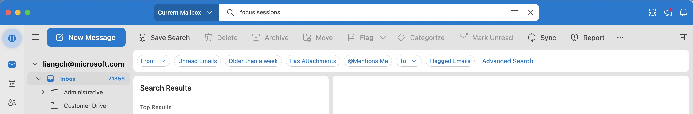
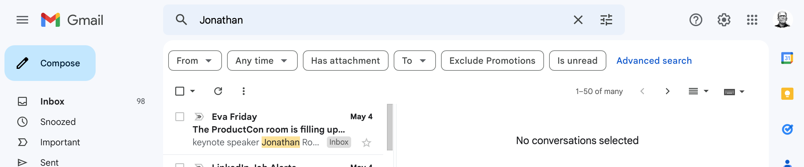
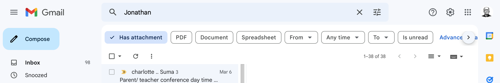

As the product owner of the Outlook.com search space, I had the opportunity to drive the development of critical search features that improved the user experience for millions of users. One of the accomplishments during my tenure was delivering the top customer asked feature: advanced search.
The advanced search feature had a significant impact on the Outlook.com user base, and it even helped convert one enterprise customer to migrate from Gmail to Outlook.com. The enterprise customer was reluctant to move to Outlook.com because of the lack of advanced search feature. However, after seeing the capabilities of the advanced search feature on Outlook.com, they were impressed and ultimately decided to migrate their email services to Outlook.com.
Additionally, I was responsible for incubating and leading the development of an interactive guided search query formulation feature, in collaboration with Microsoft research. This feature allowed users to easily create complex search queries through a step-by-step process, making search more accessible to a broader audience.
Delivering interactive guided search query formulation was no easy feat, especially given the challenge of limited user research resources. However, I was able to overcome this challenge by working with the Compass research program to test the initial concept. This initiative enabled us to gather valuable feedback and insights from users, which informed the development of the feature.
 The release of these features had a significant impact on the Outlook.com search experience. The interactive guided query formulation feature, in particular, improved core search metrics - Search Success Rate by 3.6% and Time to Success by 2.2%. As a result, this feature was later adopted by Outlook for Mac and was even copied by Gmail soon after it was released.
  Overall, my experience leading the Outlook.com search innovation highlights my skills in product management, strategic thinking, and collaboration with cross-functional teams. I am proud to have delivered critical features that improved the user experience and drove positive business outcomes. I look forward to taking on new challenges and opportunities to create innovative products that meet the needs of users.